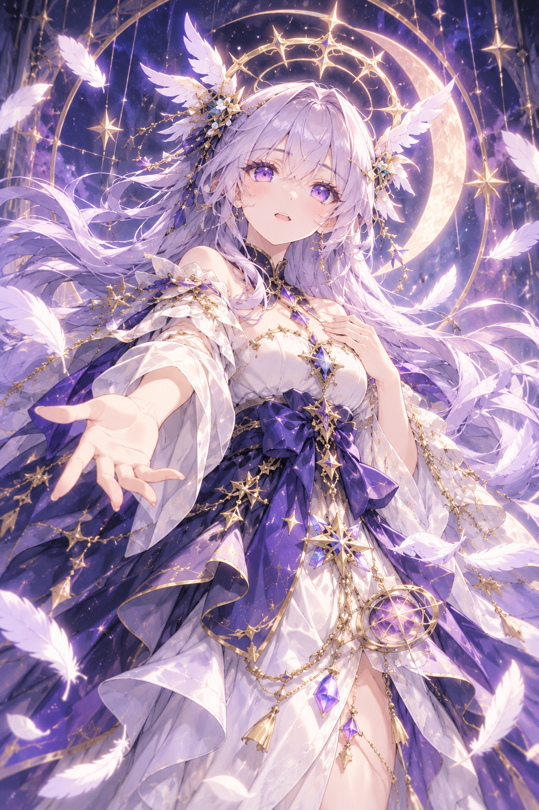

HALL OF REINCARNATION
転生の間
今年、あなたが送り出す転生者たちが到着した。

転生の女神（あなた）
案内役
Annual Blessing
今年の加護ポイント
今年の総ポイント
40
残りポイント
40
女神信仰度
40
ポイントを使っても女神信仰度は減りません。余りは翌年へ持ち越せません。残したポイントは月次観測中の救済に使用できます。救済費用は活動年数に応じて上昇し、寿命死は救済できません。救済時の能力ボーナスは各転生者につき生涯1回だけです。
今年の転生者
Blessing Setup
転生前の加護
候補者はトータルステータスの高い順に並びます。上の名前を押すと、画面をスクロールしていても対象をすぐ切り替えられます。
?
Granted Skills
まだスキルはありません。
Skill Blessings
スキル付与
設定済みプリセットと、現在解放済みのスキルだけを表示します。スキル一覧やプリセット編集は画面上部の「スキル」から行えます。
今年の加護ポイント
40 pt
総ポイント 40
1年目・1月
異世界観測晶による記録
異世界観測晶による記録
生存者 3人
1月の記録
転生者たちが異世界へ降り立った。
Annual Report